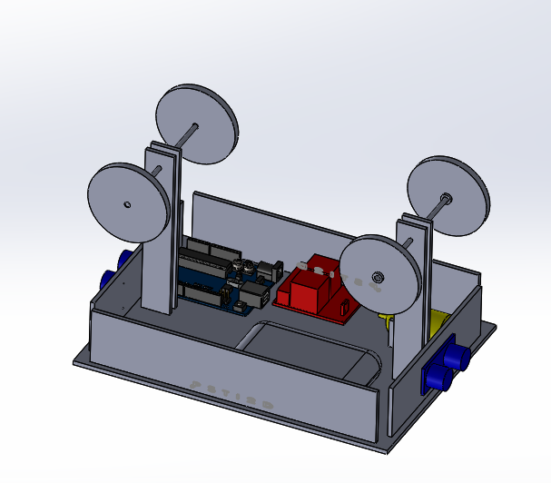

PROJET PERSONNEL
Téléphérique automatisé – STI2D
Contexte
Ce projet a été réalisé en terminale STI2D en groupe de 4 personnes. L’objectif était de concevoir et simuler un téléphérique miniature automatisé à l’aide d’un Arduino. Nous avons utilisé des capteurs à ultrasons pour détecter la position, un moteur pour l'entraînement, et avons réalisé toutes les simulations sur Tinkercad.
Mon rôle
Je me suis occupé de toute la partie programmation, du branchement des composants et de l’aspect électronique (liaison capteurs, commande moteur…). Les autres membres du groupe étaient responsables de l’étude EE et ITEC (structure, mécanique, énergie).
Compétences mobilisées
- Programmation Arduino (C/C++)
- Utilisation de capteurs à ultrasons (HC-SR04)
- Commande de moteur par signal numérique
- Montage électronique et câblage logique
- Simulation complète sous Tinkercad
Preuves
- Capture du montage 3D : 
- Extrait de code Arduino :
long distance = sonar.read();
if (distance < 10) {
digitalWrite(motorPin, LOW); // Arrêt moteur
} else {
digitalWrite(motorPin, HIGH); // Lancement
}